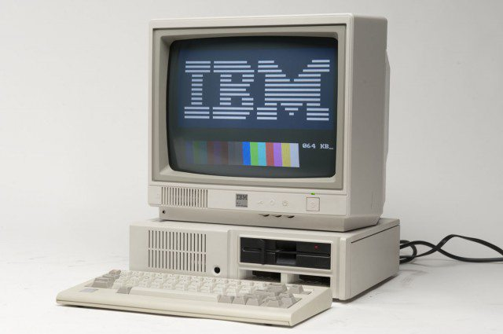

1971 год (современность) — вычислительные машины четвертого поколения. Инновацией в вычислительных машинах четвертого поколения является применение и использование микропроцессоров. Микропроцессоры представляют собой АЛУ (арифметически-логические устройства), помещенные на одну микросхему и имеющие высокую степень интеграции. Это значит, что микросхемы начинают занимать еще меньше места. Иными словами, микропроцессор – это маленький мозг, выполняющий миллионы операций в секунду по заложенной в него программе. Размеры, вес и потребление мощности резко уменьшились, а быстродействие достигло рекордных высот. И именно тогда в производство процессоров включилась компания Intel.
Первый микропроцессор назывался Intel-4004 — название первого микропроцессора, собранного в 1971 году. Он имел разрядность 4 бита, но тогда являлся гигантским технологическим прорывом. Два года спустя Intel представил миру Intel-8008, имеющий восемь бит, в 1975 году появился на свет Альтаир-8800 — это первый персональный компьютер, созданный на основе Intel-8008. Это было началом целой эры персональных компьютеров. Машину стали использовать повсеместно в совершенно различных целях.
